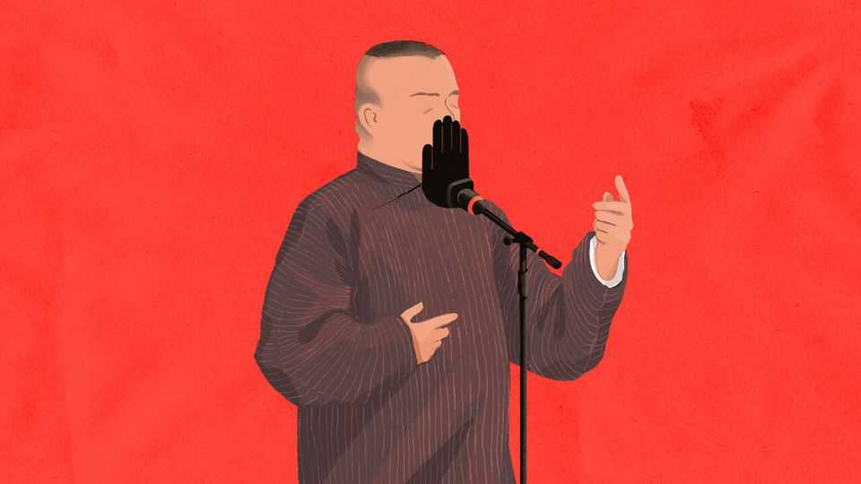

Speech in China is in the deep freeze
A natural disaster and a comedy mishap testify to the party’s power

Sep 10th 2026
FOR SOMETHING deemed so subversive, the act was understated, even underwhelming. During a live performance in mid-July, Guo Degang, a comedian, tweaked a popular Chinese revolutionary song. Instead of “all is quiet on Weishan Lake”, where Communist guerrillas hid while fighting the Japanese, he sang “all is quiet in the Forbidden City”, the old imperial centre of Beijing, and next to the home to China’s leaders. His precise meaning was ambiguous, not pointed. He drew little more than a light chuckle from the audience. But he elicited more from state authorities: a crackdown that epitomises China’s narrowed space for speech.
Mr Guo’s apparent sin was that he violated entertainment laws by not seeking approval for his modified lyrics. His shows stretching to late September have been cancelled. News of his travails sparked flickers of astonishment at such heavy-handedness. But much criticism itself had an ephemeral life online. “If a culture doesn’t leave room for a little harmless banter, aren’t we being wound too tightly?” wrote one observer—only for his post to be deleted from WeChat, a social-media platform.
The curtailment of public discourse has also been on display in more tragic circumstances: the mudslide and floods that last month killed more than 1,000 people on the border of Nepal and Tibet in south-western China. State media have reported at length on the landslide, so this is no cover-up in a conventional sense. Rather, the disaster has revealed just how little latitude remains for critical discussion of anything considered sensitive.
Videos of the disaster, including one showing a mud torrent overwhelming a border crossing, were scrubbed from online platforms. Only a handful of journalists from big state organs were allowed into the flood zone for the first ten days. Authorities publicised penalties for people who had “spread rumours” online, including one who merely speculated that thousands might be buried in the rubble. There are questions to be asked. Had China shared enough weather data with Nepal before the glacial collapse? How could Nepal, with fewer resources, update its casualty list rapidly, whereas China’s barely budged?
It was a striking contrast with coverage of a massive earthquake in south-western China in 2008. Then, online spaces bristled with anger about the shoddy construction quality of schools. Reporters produced moving portraits of families torn apart. This time, reporting has focused not on victims but on indefatigable rescuers. Chinese journalists have been told to stick to whatever big state outlets are reporting. The government has not blocked news so much as drawn the parameters of what can be said.
Neither Mr Guo’s travails nor the circumscribed flood coverage will surprise those who track Chinese speech. Both are grim markers of how far the information environment has shifted. In the early 2000s the internet seemed to offer an opening for debate. Chinese journalists sometimes pursued courageous investigations. But Xi Jinping made clear soon after taking power in 2012 that the unruly internet had to be tamed and the media must serve the party. On his own terms, he has been successful. China still has plenty of commentary beyond pure state media, especially in “public accounts” on WeChat. Yet anyone posting there knows that taboo topics get accounts closed, a strong incentive to play it safe. More recently, artificial intelligence has given censors great power to survey the digital landscape in all its vastness and to speedily delete undesirable content. The party used to be a big step behind China’s once-rumbustious online chats; now it undoubtedly has the upper hand, says Xiao Qiang of China Digital Times, a site that monitors censorship.
It is natural to think about what the state blocks, be it foreign websites or domestic critics. But the system is far more ambitious than that. The bigger goal is to manage “the broader information landscape such that it alters what citizens know, and even what they think”, Jessica Batke and Laura Edelson wrote last year in a sweeping analysis for the Asia Society, a think-tank, about how China controls its internet. Residents of China can still tunnel outside the country’s online firewall to see what the rest of the world is talking about. But only a small minority are so motivated, and even if someone forms dissenting views, they cannot transport them back into Chinese online discussions. Mr Xiao says his team manages to archive just one or two posts per day before they are wiped from the internet. And they have become “less and less interesting”, often quite minor in their critical scope—testimony, he believes, to China’s well-oiled information-control machine.
The chill also filters into the offline world. With friends and family, people are still highly opinionated and do not hold back from complaining, whether about work or school. But online limits affect debates in the flesh—information has to come from somewhere. People also seem to be internalising some of the censorship. Stage performers who follow in Mr Guo’s wake are bound to be more careful. A WeChat post about Mr Guo, subsequently deleted, says the caution has reached dinner tables: “If the conversation approaches a sensitive topic, we look around first and lower our voices, like we’re underground operatives making contact.”
What is lost in all of this? Limits on free speech hurt China, by making it harder to spot problems early and deal with them rationally. They may ultimately hurt the party, too, by letting grievances bubble undebated until they boil over. Yet that is surely not what China’s leaders think. They have their own internal sources of information; the public, in their view, need not be concerned by affairs of the state. This is what they have been building towards. For the party, the power to set the agenda in the modern age—to control so much of what people see and say—is a triumph. ■